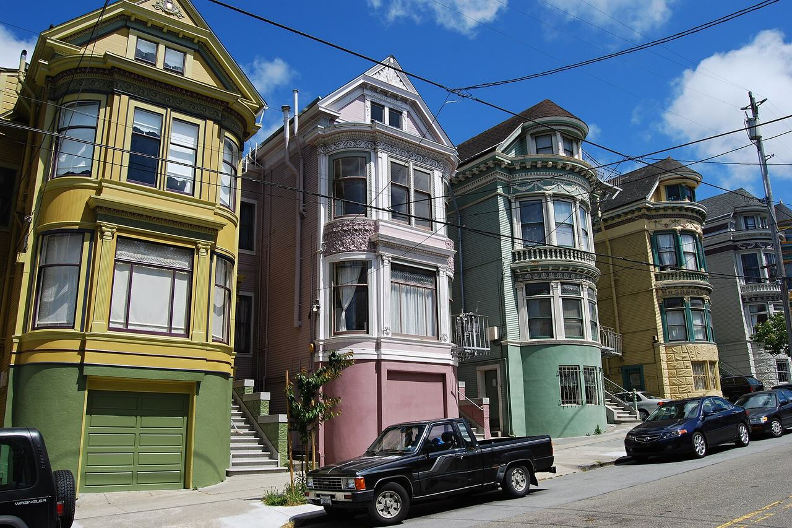

Haight Ashbury
The neighborhood at the east end of Golden Gate Park, at the centre of San Francisco's 1960s counterculture. Its housing is largely late-Victorian and Edwardian, and several blocks fall inside California Register historic districts.

Map
Named buildings and landmarks
-
-
-
-
-
-
-
-
-
Streets documented so far
- 17th Street
1 building, built 1912. - Ashbury Street
Two buildings — the house guides give the Grateful Dead, and one of three Janis Joplin addresses. - Ashbury Terrace
1 building, built 1912. - Belvedere Street
2 buildings, built 1906–1908. - Beulah Street
1 building, built 1900. - Broderick Street
1 building, built 1900; 1 in the Buena Vista North Historic District. - Buena Vista Avenue
1 building, built 1931. - Buena Vista Avenue West
The house the city names the Floyd Spreckels Mansion, tied to Jack London and Danny Glover. - Carl Street
1 building, built 1900; 1 in the Cole Valley Historic District. - Carmelita Street
1 building, built 1900; 1 in the Duboce Park Historic District. - Central Avenue
1 building, built 1905. - Clayton Street
1 building, built 1900; 1 in the Panhandle Historic District. - Cole Street
A two-flat 1903 building linked to Charles Manson in 1967. - Divisadero Street
1 building, built 1885. - Fell Street
1 building, built 1987. - Haight Street
Flats over a store of 1900, inside the Counterculture Historic District. - Lyon Street
Two buildings facing the Panhandle, both named for Janis Joplin by the same guide. - Masonic Avenue
2 buildings, built 1903–1906; 2 in the Ashbury Heights Historic District. - Oak Street
1 building, built 1900. - Page Street
1 building, built 1900; 1 in the Buena Vista North Historic District. - Piedmont Street
1 building, built 1909. - Potomac Street
1 building, built 1900; 1 in the Duboce Park Historic District. - Rivoli Street
1 building, built 1911; 1 in the Cole Valley Historic District. - Scott Street
1 building, built 1900. - Stanyan Street
1 building, built 1911; 1 in the Panhandle Historic District. - Steiner Street
1 building, built 1900; 1 in the Duboce Park Historic District. - Waller Street
1 building, built 1904.
Historic districts here
- Ashbury Heights Historic District
- Buena Vista North Historic District
- Cole Valley Historic District
- Duboce Park Historic District
- Haight Ashbury Counterculture Historic District
- NOPA Historic District
- Panhandle Historic District
- San Francisco Neighborhood Movie Theater Historic District (Discontiguous)
Adjacent neighborhoods
Golden Gate Park closes these blocks to the west and the Panhandle runs along the north. Hayes Valley is east beyond Divisadero Street, the Castro south-east across Buena Vista Park, Corbett Heights south up Clayton and Ashbury Streets, and the Inner Sunset south-west over Mount Sutro.